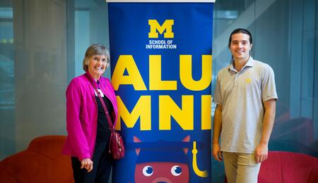
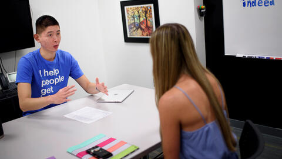
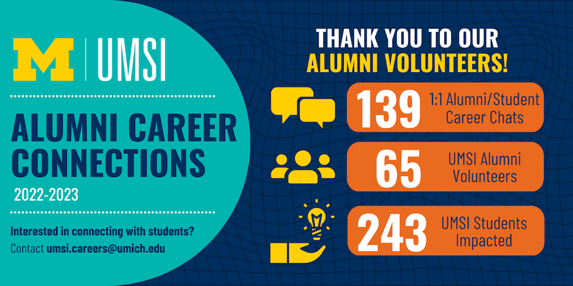

Section 1: What is Networking is Building Relationships?
- Leverage your circle of friends, family, professors, previous employers, and the University of Michigan Alumni.
- Be curious about the person you are connecting with to learn more about their career. Networking isn’t about winning people over or asking for a job.
- We recommend asking for informational interviews, which are short meetings or calls with someone in a field of interest to learn more about their job, their industry, their career pathway, and to hear their advice.
Section 2: How Do I Start Networking?
- To get started with networking:
- Prepare for networking by polishing your resume, practicing your elevator pitch, and generating questions to ask during informational interviews.
- Identify people to reach out to to build your community.
- Make contact to ask for a time to connect. Ask for an informational interview, not a job. Informational interviews are about asking professionals questions to learn more about their pathways, their profession, and/or industry, and to get their advice.
- Remember to send a thank you note to those you connect with!
WHERE TO FIND ALUMNI
Back to section2UMSI Career Showcase
Each fall, the UMSI Career Development Office hosts major employers to meet current students. The three-hour event on September 25, 2013 was a huge hit with employers and students alike.
UMSI Alumni Career Connections | umsi
Connect with the UMSI community. Support current students. Expand your own network.
The UMSI Career Development Office is seeking alumni experts in all industries and fields to connect with current students through structured informational interviews and technical career sessions.
We make it easy (and free) to connect with students. All we ask of you is:
- Two-hour minimum time commitment (sessions are 30 minutes each)
- Your preferred video meeting platform
- Your lived experience & industry expertise!
Back to Videoshowcase
Here are some ways you can connect:
Coffee chats
Make connections while helping to grow students’ networks!
These 1:1 or small group meetings are focused on having conversations to get to know each other and build a relationship. Discuss career journeys, key skills and more.
Technical interview prep/practice sessions
Technical interviews assess the ability to use technical skills or approach technical problems.
Share your real-world experiences and expertise to help students prepare or practice for technical interviews!
Portfolio reviews
Portfolios highlight past projects and demonstrate the author’s approach to their work.
We are seeking alumni to share their industry expertise and give feedback to students on how to present past and current work through a portfolio review or practice walk through.
Back to connection_section1
The 5-Point Networking Email format can be an effective framework for sending networking outreach emails to peers, alumni, and professionals.
Steve Dalton’s The 2-Hour Job Search promotes the use of a 5-point email as an effective message for networking.
- Keep it short! Try to keep it to 100 words or less
- No mention of jobs/internships in subject or body
- Connection goes first (e.g. UMSI connection)
- Generalize your interest – make it easy for them to respond
- Maintain control of the follow up. This gives you permission to follow up once
Maintain control of the follow up. This gives you permission to follow up once
Below are some examples of how this template may be utilized to reach out in different scenarios.
Subject: UMSI BSI Student Seeking Your Advice
Dear Mr. Johnson,
My name is Alexis, and I will be a senior in the UMSI BSI program at U-M this fall. I’m interested in learning more about careers in UX research, and I saw on LinkedIn that you currently work in UX Research at Google. As an alum, I know your perspective about your current role and the steps you took to get there would be very helpful.
I would be happy to meet via phone or Zoom. I know this may be a busy time, so if we aren’t able to meet within the next two weeks, I’ll be sure to check back in to see if sometime later this summer would work better.
Thank you so much,
Alexis
Back to top